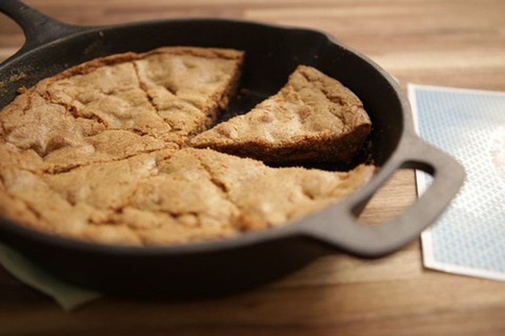

Cookie de Frigideira

Descrição
Criado por Raíza Costa, o cookie é uma tradicional sobremesa americana super fácil de fazer!
Este cookie não requer experiência, uma boa frigideira de ferro fundido e apenas alguma habilidade
Ingredientes
- 90 gramas de manteiga sem sal em temperatura ambiente
- 65 gramas de açúcar mascavo
- 90 gramas de açúcar
- 1 ovo
- 5 mililitros de essência de baunilha
- 120 gramas de farinha
- 5 gramas de fermento em pó
- 1 pitada sal
- 200 gramas de chocolate meio amargo picado
Modo de Preparo
- Pré-aqueça o forno em 180 graus Celsius
- Numa vasilha, misture a manteiga com o açúcares mascavo e o comum até formar um creme.
- Acrescente o ovo, a baunilha e mexa para incorporar.
- Sempre mexendo, adicione a farinha, o fermento, o sal e, por último, o chocolate picado.
- Depois de tudo bem misturadinho, transfira para uma forma, ou frigideira de ferro.
- Leve para assar por 20 minutos, até o cookie ficar dourado.
- Depois disso, espere 5 minutinhos para esfriar e pode se deliciar à vontade.
Home